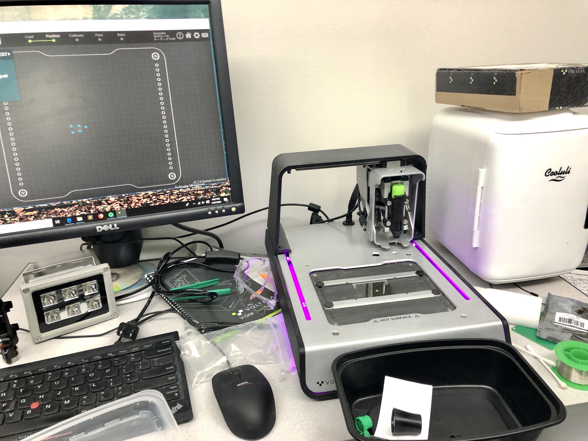
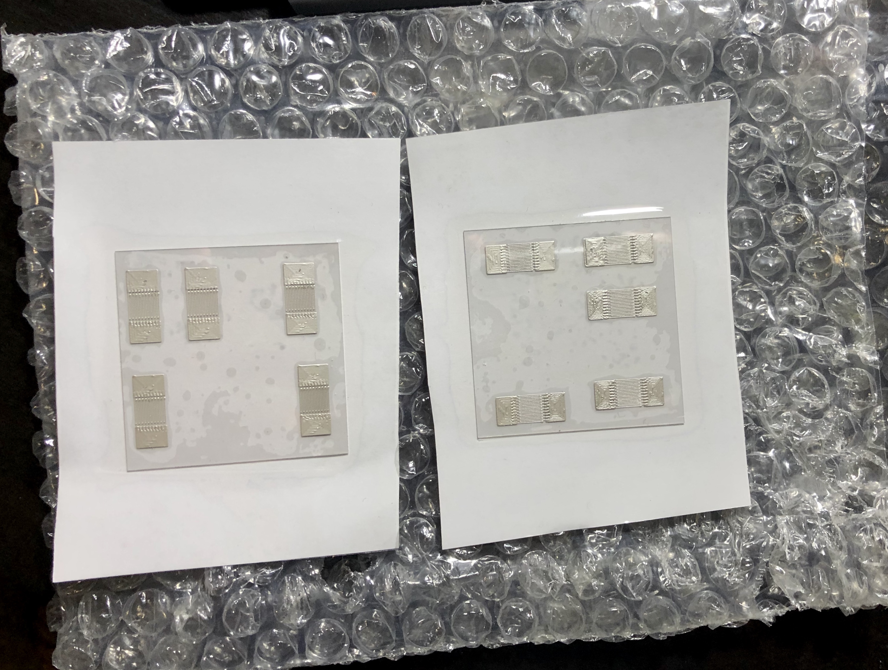
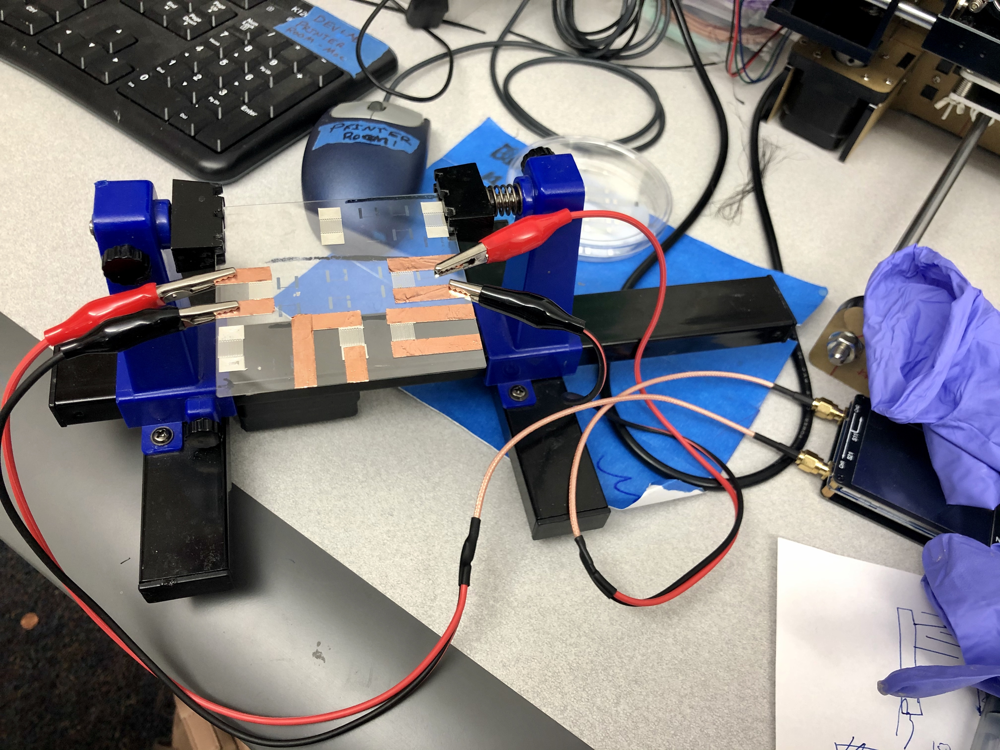
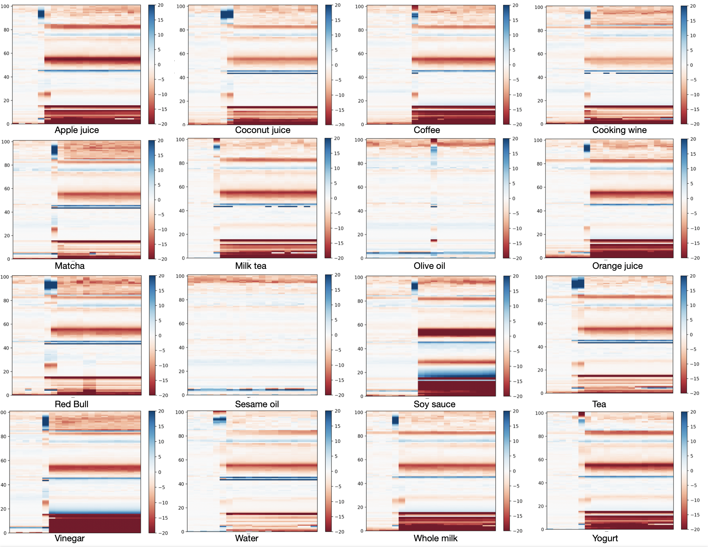
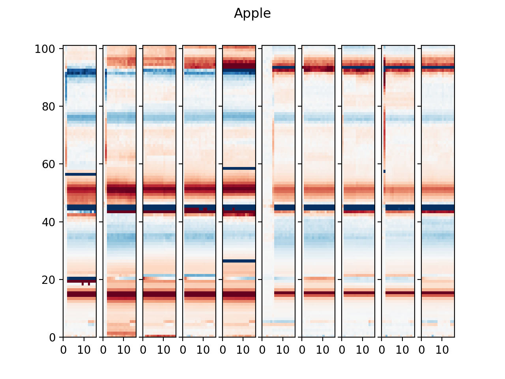
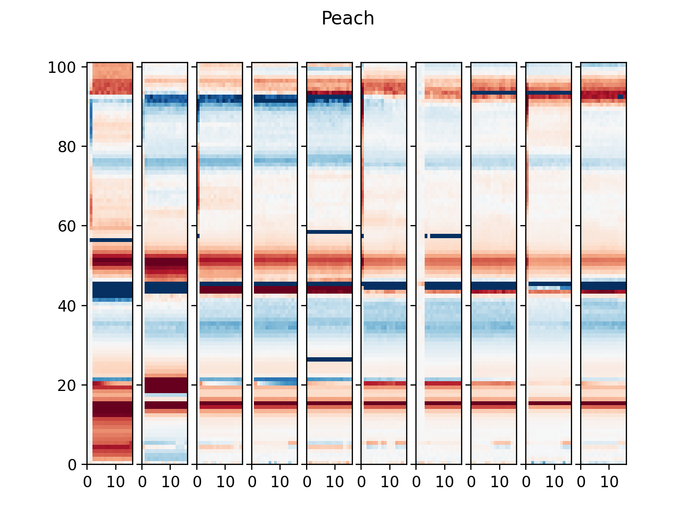
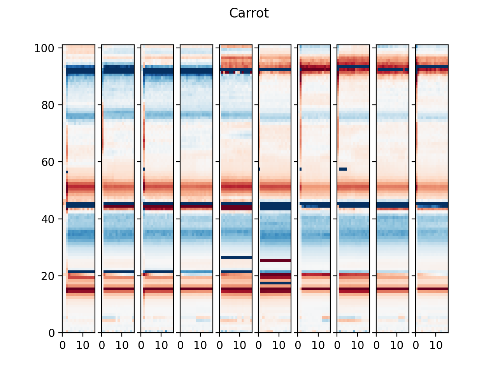
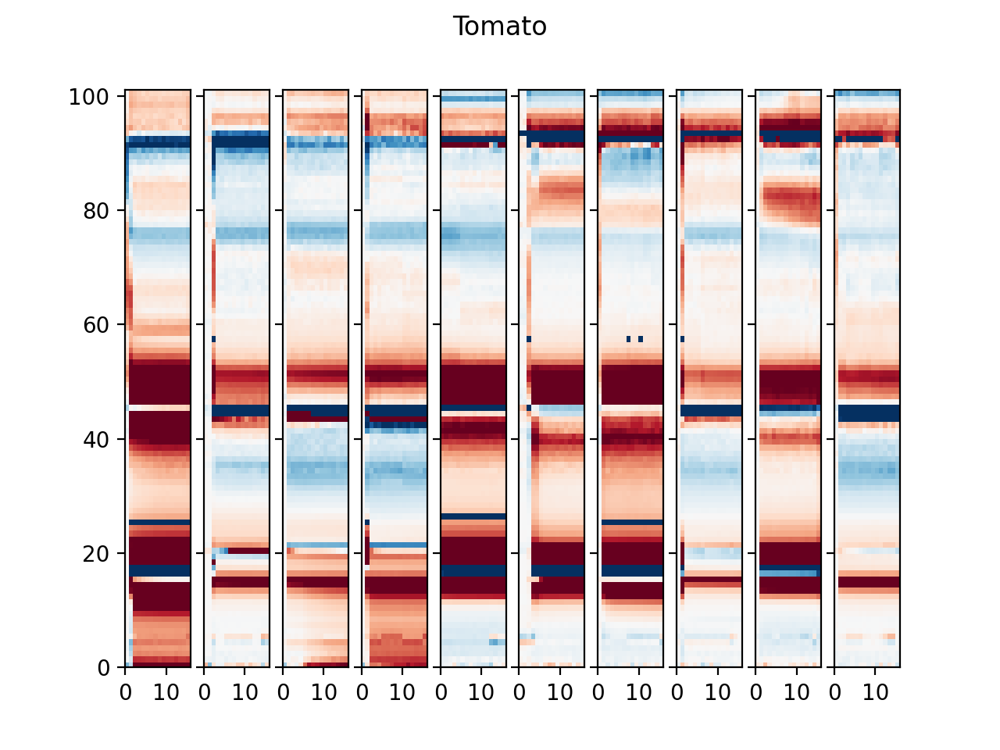

This project aims to explore cost-efficient and simple ways to fabricate wireless and passive surface acoustic wave (SAW) devices for input devices, activity and object recognition. Accessibility of such devices in terms of design space and cost brings new possibilities for interactive experiences.
Surface acoustic wave (SAW) devices, which are commonly used for motion detection such as detecting gestures in mobile phones, are composed of a single piece of piezoelectric material (SAW substrate) and one or more interdigital transducers (IDTs) which are two interweaving comb-shaped parallel patterns of metallic (thus conductive) electrodes. When an electric signal is sent to an IDT transducer pattern the applied electric field generates acoustic waves due to the converse piezoelectric effect. This wave propagates through the surface of the SAW substrate for some distance and passes across a reflector pattern. A fraction of the acoustic wave is reflected by the reflector pattern and thus propagates back to the input IDT pattern. Then once again due to the piezoelectric effect, the acoustic wave gives rise to electric signals, resulting in a return signal, possibly with different phases as compared to the input signal. During such a process, vibrations in an environment interfere with the propagation of acoustic waves, changing some characteristics of the waves. Thus with a returning signal in an undisturbed environment serving as a baseline for comparison, we expect to see a significant change in returning signal patterns when vibrations exist. SAW devices can, therefore, be used for various purposes like temperature sensing, humidity detection, liquid presence detection and motion detection.
Traditional IDT patterning methods in SAW devices require sputtering machines, clean room techniques, and photolithographic tooling which are all expensive. Thus, the ability to manufacture SAW devices has remained an impediment to further exploration in non-mass-production scenarios like research, encouraging researchers to invent new devices or to further explore in this domain.
While the machinery and techniques remain inaccessible, the cost of raw materials (piezoelectric substrates) used for SAW device patterning has dropped significantly due to the adoption of SAW devices in mobile phone industries. We will utilize a method called Direct Ink Writing (more cost-efficient and has less stringent requirements on patterning environments) whereby metallic substances are extruded and patterned over Lithium niobate (LiNbO3) substrates to produce a SAW device. This project also aims to explore how to make SAW devices wireless and passive by using antennas - traditional SAW devices send electric signals in a wired way thus requiring external power support. By finding low-cost, simple, wireless, self-powered, and thus accessible SAW devices, the project contributes to future applications on interactive experiences in various environments.
We aim to exploit this price drop in substrate material along with a newly available low-cost robotic print technology called Direct-Ink-Write (DIW) to extrude metallic substances at micron-scale. Our project aims to explore the full capabilities of DIW printers, understanding its benefits and limitations towards manufacturing low-cost SAW devices. The project contributes to present a low-cost, easily accessible, and wireless vibration sensing and motion detection device. Specifically, the project will seek to answer the following research questions:
We used a voltera printer to fabricate then test different characterizations of transducers.
An example of the transducers we fabricated:
We then set up the IDTs to be connected to a NanoVNA for sending and receiving of RF signals.
Based on some open source python scripts that deals with connecting to and manipulating the NanoVNA from a laptop, we made some modifications to help with our own data collection and visualization. Orginally the scripts only support capturing of one sweep. We modified the program to support continuous sending and scanning of signals. Since we are putting different food and liquid items onto the substrate we plotted a continuous heatmap of phase difference based on a baseline and frequency bands.
We went through different phases of data collection, data visualization, and detection item selection. For both food and liquid items, we first tested different items to see if their signal displays are different. Below is an example of such tests.
Then we picked those with significant differences to visualize their signals across different sections to check the consistency. Below are some examples of such tests.
   We also developed a machine learning pipeline (using random forest) to collect data and train the model for real time prediction of liquid and food items. Currently, the accuracy of the traning model is still limited, both becuase of signal qualities and model training method.
Below is an example of the live training session we did. (as the data collection phase is time consuming, you can adjust the playback speed accordingly)